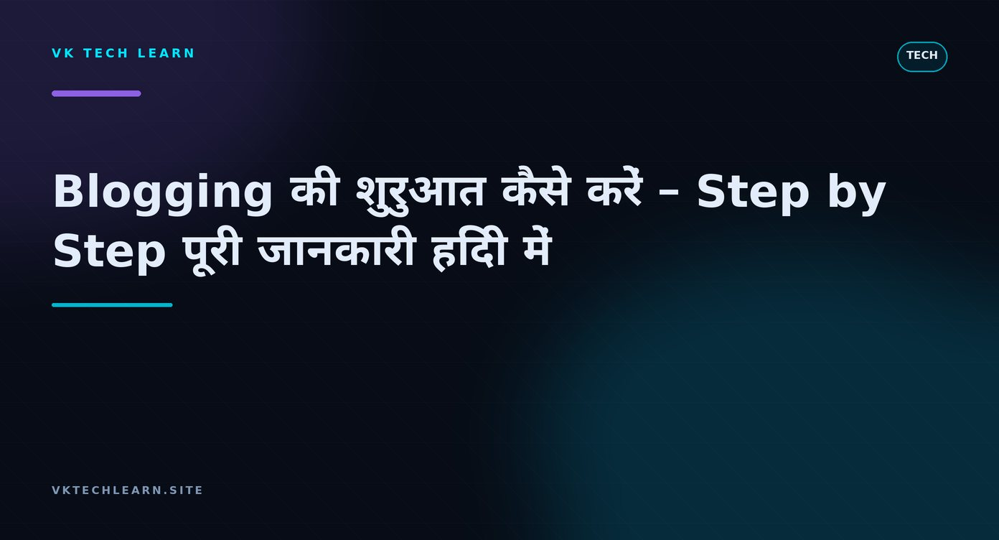

Blogging की शुरुआत कैसे करें – Step by Step पूरी जानकारी हिंदी में
Blogging की शुरुआत कैसे करें: एक स्टेप बाय स्टेप गाइड
आज के डिजिटल युग में ब्लॉगिंग न केवल अभिव्यक्ति का माध्यम है, बल्कि एक कमाई का जरिया भी बन चुका है। अगर आप भी सोच रहे हैं कि Blogging की शुरुआत कैसे करें, तो यह गाइड आपके लिए है।

1. ब्लॉगिंग क्या है?
ब्लॉगिंग एक ऑनलाइन प्लेटफ़ॉर्म पर अपने विचार, जानकारी या अनुभव को लेख के रूप में साझा करने की प्रक्रिया है। इसमें आप टेक्स्ट, इमेज, वीडियो आदि का उपयोग करके कंटेंट बना सकते हैं।
2. ब्लॉगिंग के लिए जरूरी चीज़ें
- एक कंप्यूटर या मोबाइल
- इंटरनेट कनेक्शन
- एक ईमेल ID (Google अकाउंट)
- लिखने की रुचि और विषय ज्ञान

3. अपने ब्लॉग का Niche चुनें
ब्लॉग शुरू करने से पहले यह तय करें कि आप किस विषय पर लिखेंगे। इसे ही niche कहा जाता है। जैसे: Tech, Health, Education, Finance, Travel आदि। वही विषय चुनें जिसमें आपको रुचि और जानकारी हो।
4. Blogging Platform चुनें
ब्लॉगिंग शुरू करने के लिए आपको एक प्लेटफॉर्म की जरूरत होगी। सबसे लोकप्रिय प्लेटफॉर्म हैं:
- Blogger (Google का फ्री प्लेटफॉर्म)
- WordPress (Free और Paid दोनों)
- Medium, Wix आदि भी विकल्प हैं
5. Blogger पर फ्री ब्लॉग कैसे बनाएं
- www.blogger.com पर जाएं
- अपने Google अकाउंट से लॉगिन करें
- “Create New Blog” पर क्लिक करें
- ब्लॉग का टाइटल और URL (जैसे: myblogname.blogspot.com) डालें
- कोई थीम चुनें और ब्लॉग बना लें
6. पहली पोस्ट कैसे लिखें?
- Dashboard में जाकर “New Post” पर क्लिक करें
- Post Title डालें (SEO-friendly)
- Content लिखें – सरल भाषा और छोटे पैराग्राफ का उपयोग करें
- Related Images डालें
- Labels और Permalink सेट करें
- Publish पर क्लिक करें
7. ब्लॉग का डिजाइन और लेआउट कस्टमाइज़ करें
आप “Theme” सेक्शन से अपने ब्लॉग की थीम बदल सकते हैं। “Layout” में आप Header, Footer, Sidebar आदि को एडिट कर सकते हैं।
8. SEO क्या होता है और क्यों ज़रूरी है?
SEO (Search Engine Optimization) से आपका ब्लॉग Google जैसे सर्च इंजनों में ऊपर दिखाई देता है। इसके लिए:
- Keywords का सही उपयोग करें
- Title और Meta Description अच्छे से लिखें
- Internal और External लिंक जोड़ें
- Alt Text के साथ इमेज जोड़ें
9. ब्लॉग पर ट्रैफिक कैसे लाएं?
- Social Media (Facebook, Instagram, Twitter) पर शेयर करें
- WhatsApp Groups और Forums में प्रचार करें
- SEO Friendly पोस्ट लिखें
- Guest Posting और Backlinks बनाएं
10. ब्लॉग से पैसे कैसे कमाएं?
जब आपके ब्लॉग पर अच्छा ट्रैफिक आने लगे, तब आप इन तरीकों से पैसे कमा सकते हैं:
- Google AdSense: विज्ञापन दिखाकर
- Affiliate Marketing: प्रोडक्ट लिंक से कमाई
- Sponsorships: ब्रांड के साथ काम करके
- Digital Products: जैसे eBooks, Courses
11. नियमित पोस्ट करना जरूरी है
ब्लॉगिंग में सफलता के लिए आपको लगातार और उपयोगी कंटेंट पोस्ट करना चाहिए। सप्ताह में कम से कम 1–2 पोस्ट जरूर डालें।
12. कुछ जरूरी टिप्स
- हमेशा Original Content लिखें
- Plagiarism से बचें
- Responsive और Fast Template का इस्तेमाल करें
- Audience के साथ जुड़ाव बनाए रखें
निष्कर्ष
Blogging शुरू करना जितना आसान है, उतनी ही मेहनत से इसे सफल बनाना होता है। अगर आप नियमित और गुणवत्ता पूर्ण कंटेंट देंगे, तो ब्लॉगिंग आपके लिए एक शानदार करियर विकल्प बन सकता है।
अगर आप ब्लॉगिंग सीखना चाहते हैं, तो आज ही अपना पहला ब्लॉग शुरू करें!
#BloggingKaiseShuruKare #BloggingInHindi #BloggerGuide #SEOinHindi #MakeMoneyOnline #BloggingTips #WordPressVsBlogger #DigitalCareer #HindiBlogging #StartBloggingToday